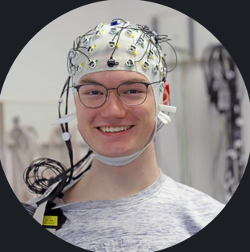

|
Dominik Faerber
I'm a Bachelor Student in Electrical Engineering and Information Technology (D-ITET) at ETH Zurich and work as a Research Assistant at ETH's Lab for Geosciences and Geoenergies (Prof. Giardini).
Before, I worked as RA the PainLab (Prof. Ploner) at TU Munich.
I'm interested in cross-disciplinary mathematical modelling of complex systems. Currently, I am exploring multi-dimensional tomographies via elastic wave propagation. In the past, I explored systems in computational neuroscience and medical imaging.
Feel free to reach out for a discussion! I'm always eager to connect with other scientifically interested minds!
Email /
GoogleScholar
|

|
|
|
Bedretto Lab for Geosciences and Geoenergies
| Position |
Research Assistant |
| Supervisor |
Dr. Hertrich M (under Prof. Giardini D) |
| Focus |
Computational/Mathematical Seismology |
| Time |
04/2024 - present |
| Responsibilites |
- Studying inversion theory for creating (3D & 4D) rock tomographies
- Developed package to pre-process raw seismic data, serving as input for inversion algorithms
- Executed 200+ hours of in-field active seismic surveys in underground lab
- Migrated data acquisition systems from MATLAB to Python (incl. signal generation with National Instruments sytems)
|
|
|
PainLab
| Position |
Research Assistant |
| Supervisor |
Dr. Bok L (under Prof. Ploner M) |
| Focus |
Bayesian modelling & EEG analysis |
| Time |
10/2021 - 09/2022 |
| Responsibilites |
- Implemented inference and Bayesian Linear Mixed-Effects Models on simulated EEG data in R; conducted model comparisons
- Studied and applied EEG preprocessing pipelines using MATLAB (FieldTrip toolbox)
- Recorded 80+ hours of EEG data using active electrode sets; monitored and evaluated EEG signal quality
- Supported 3 EEG teaching workshops for 40+ Master's students in Neuroengineering
- Processed and analyzed questionnaire data (e.g., PSQI, PANAS, PSQ, HADS) using Python and Excel
|
Thanks to Barron J for open-sourcing the website code.
|
|
{kind=link}